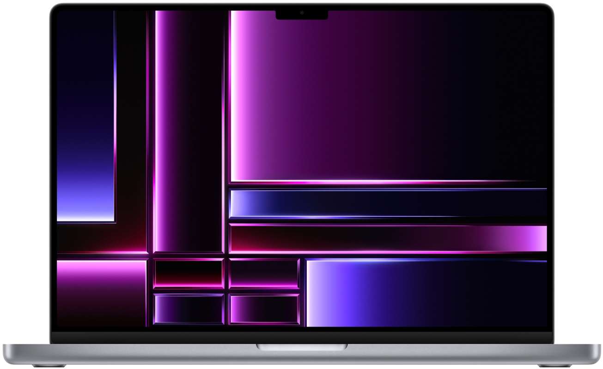

|
|
MacBook Pro
Суперсила профессионалов.  |
M1 Max
Дико быстрее.
M1 Max — невероятно мощный чип для ноутбуков профессионального уровня. Он оснащается 10‑ядерным процессором, графическим процессором до 32 ядер и 16‑ядерной системой Neural Engine. Скорость обработки графики и пропускная способность памяти у этого чипа вдвое больше, чем у M1 Pro. Кодирование видео происходит до 2 раз быстрее, поскольку в M1 Max установлено два медиапроцессора для кодирования и отдельный медиапроцессор для декодирования, а два ускорителя ProRes помогают при работе с несколькими потоками видео.
|